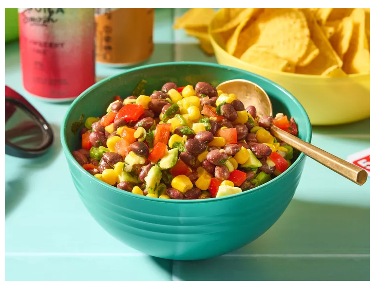

Recipes
Home

Description
This black bean and corn salad is a colorful side dish tossed in a refreshing lime dressing, with creamy bites and some heat that keeps it from tasting flat.
Ingredients
- ½ cup olive oil
- 1 clove garlic, minced
- 1 teaspoon salt
- ⅓ cup fresh lime juice
- ⅛ teaspoon ground cayenne pepper
- 2 (15 ounce) cans black beans, rinsed and drained
- 1 ½ cups frozen corn kernels, thawed
- 1 avocado - peeled, pitted and diced
- 1 red bell pepper, chopped
- 2 tomatoes, chopped
- 6 green onions, thinly sliced
- ½ cup chopped fresh cilantro
Steps
- Gather the ingredients.
- Place olive oil, lime juice, garlic, salt, and cayenne pepper in a small jar. Close the lid tightly and shake the jar until the dressing is well combined.
- Combine beans, thawed corn, avocado, bell pepper, tomatoes, green onions, and cilantro in a salad bowl.
- Shake dressing again, pour over salad, and toss to coat.
- Enjoy!